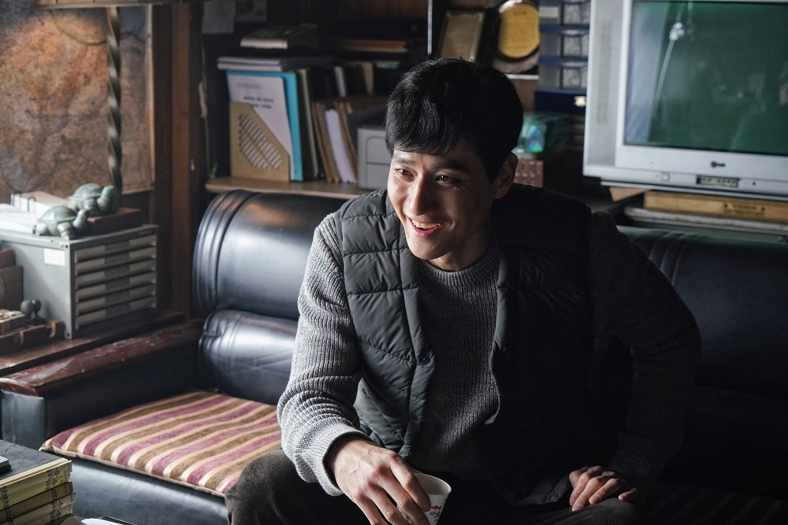
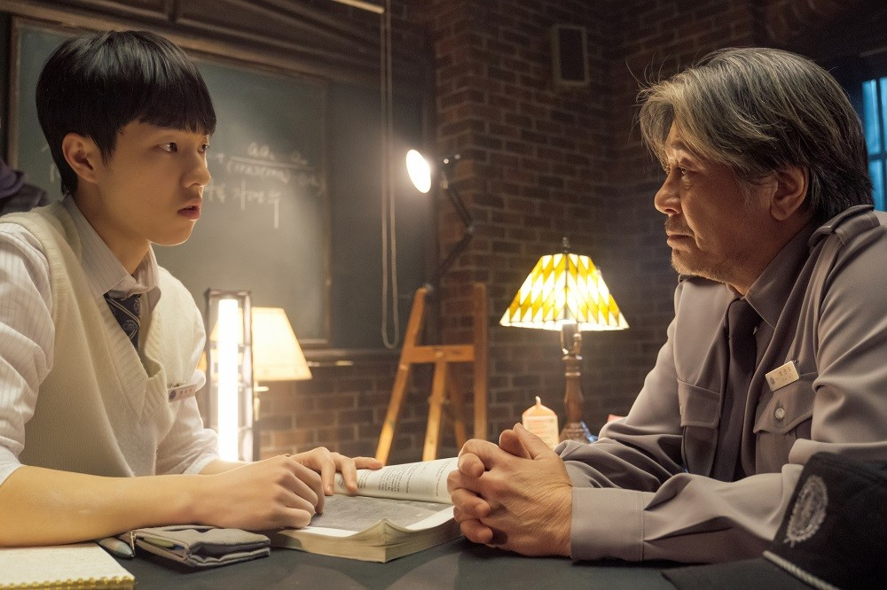

시놉시스
Synopsis


결과보다 과정이 아름다운 인생과 수학의 만남!
학문의 자유를 갈망하며 탈북한 천재 수학자 '이학성’(최민식). 그는
자신의 신분과 사연을 숨긴 채
상위 1%의 영재들이 모인 자사고의 경비원으로 살아간다. 차갑고 무뚝뚝한 표정으로 학생들의
기피 대상 1호인 ‘이학성’은 어느 날 자신의 정체를 알게 된 뒤 수학을 가르쳐 달라 조르는 수학을
포기한 고등학생 ‘한지우’(김동휘)를 만난다. 정답만을 찾는 세상에서 방황하던 ‘한지우’에게 올바른
풀이 과정을 찾아나가는 법을 가르치며 ‘이학성’ 역시 뜻하지 않은 삶의 전환점을 맞게 된다.
상위 1%의 영재들이 모인 자사고의 경비원으로 살아간다. 차갑고 무뚝뚝한 표정으로 학생들의
기피 대상 1호인 ‘이학성’은 어느 날 자신의 정체를 알게 된 뒤 수학을 가르쳐 달라 조르는 수학을
포기한 고등학생 ‘한지우’(김동휘)를 만난다. 정답만을 찾는 세상에서 방황하던 ‘한지우’에게 올바른
풀이 과정을 찾아나가는 법을 가르치며 ‘이학성’ 역시 뜻하지 않은 삶의 전환점을 맞게 된다.
명장면
Best Movie Cuts

이학성 (최민식)
"나는 증명되지 않은 건 믿지 않는다."

안기철 (박해준)
"큰 건 몰라도 소소한 건 누리고 삽시다."

이학성 (최민식)
"정답보다 중요한 건 답을 찾는 과정이야."
한지우 (김동휘)
"틀린 문제에선 옳은 답이 나올 수 없습니다."